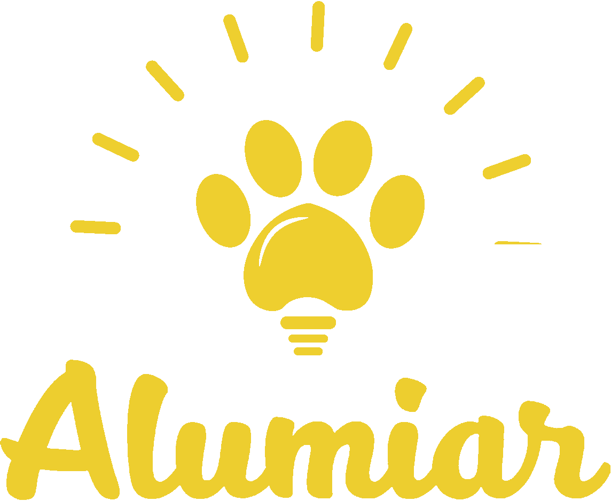

O Alumiar é uma ação que nasce no coração do sertão central com a proposta de dar luz ao trabalho voluntário feito pelos projetos sociais de apoio aos animais abandonados na cidade de Quixadá.
Porque Alumiar?

Ajudar projetos sociais
Na cidade de Quixadá existem muitos projetos sociais que realizam o trabaho de ajudar bichinhos abandonados com muito amor e carinho, porém, também com muitas dificuldades. Eles lidam com problemas como falta de sede para abrigar os animais, poucos recursos e poucas adoções.

Dar visibilidade aos Lares Temporários
Os animais encontrados em estado de abandono são abrigados pelos voluntários, que transformam suas casa em lares temporários, devido a falta de visibilidade e conhecimento da população, muitos desses animais permanecem nesses locais por toda a vida, impossibilitando os voluntários abrigar novos bichinhos.